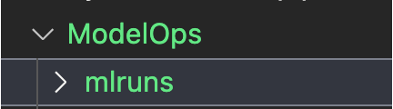
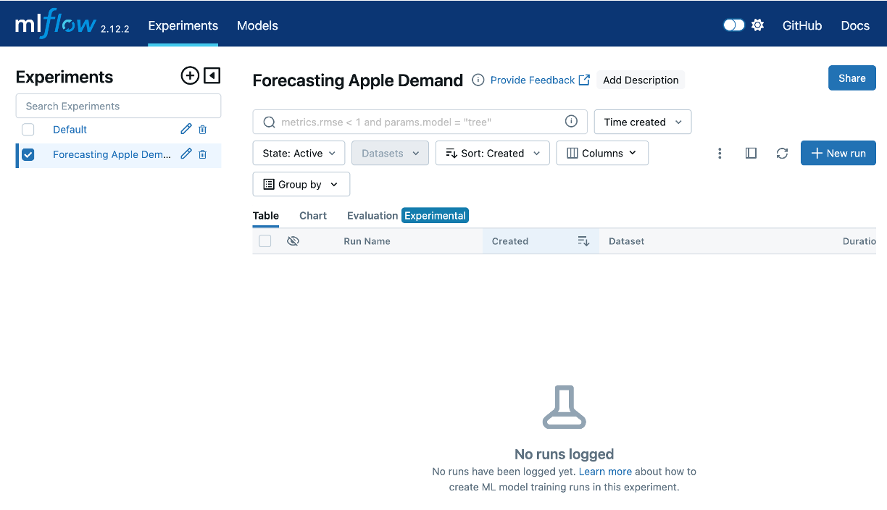
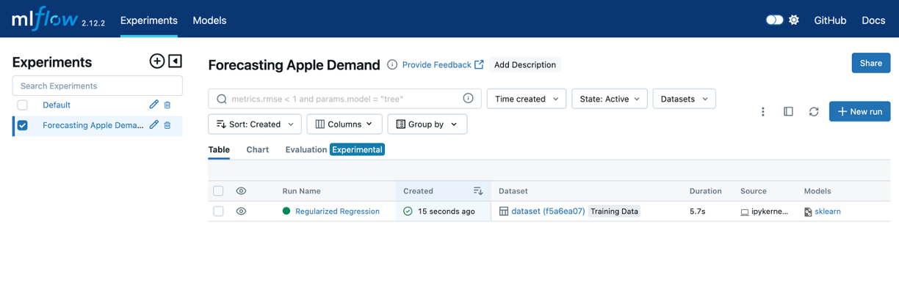
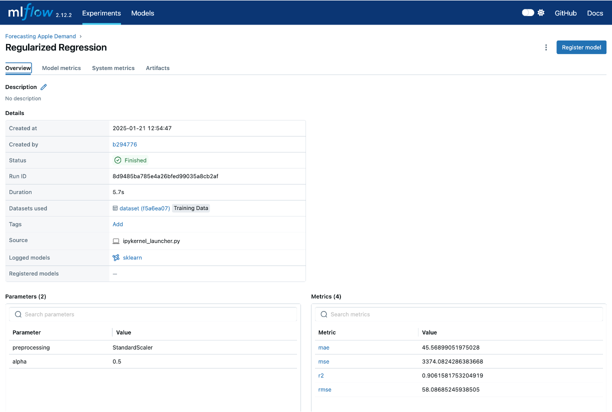
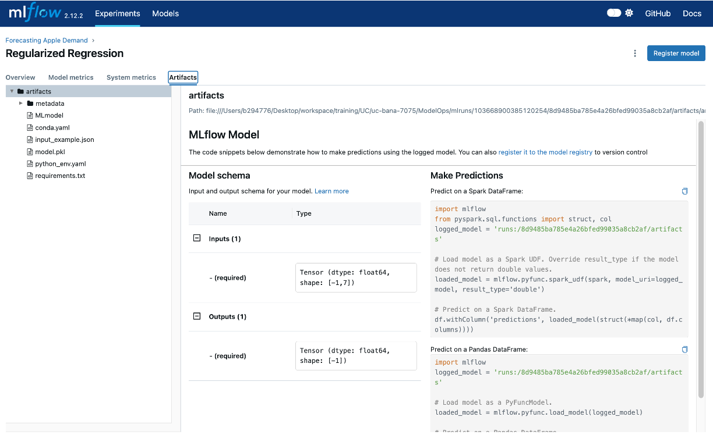
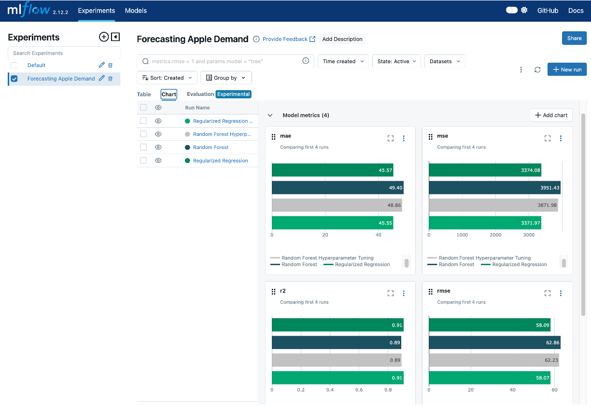

Python version: 3.12.7 | packaged by Anaconda, Inc. | (main, Oct 4 2024, 08:28:27) [Clang 14.0.6 ]
mlflow==2.12.2
numpy==1.26.4
pandas==2.1.4
scikit-learn==1.5.1
xgboost==2.1.36 Model Training and Experiment Tracking
Reading Time: 40-55 minutes
Model training is the cornerstone of machine learning, where algorithms learn patterns from data to make predictions or decisions. The process involves feeding a machine learning model with labeled data, enabling it to map inputs to desired outputs. This stage is critical because the effectiveness of the entire ML system hinges on the model’s ability to generalize from training data to unseen scenarios. However, achieving high performance is rarely straightforward and often requires iterative experimentation.
Training a model is not a one-and-done process. It involves an iterative cycle of hypothesis testing, parameter tuning, and evaluation to optimize performance. Data scientists experiment with hyperparameters, datasets, preprocessing techniques, and algorithms to achieve the best outcomes. Each experiment builds on the previous, gradually refining the model’s capabilities. This trial-and-error approach, while powerful, introduces complexities, especially when dealing with multiple experiments, diverse datasets, and varying metrics.

This is where experiment tracking becomes indispensable. Experiment tracking provides a structured approach to documenting every aspect of the training process, including hyperparameters, datasets, metrics, and results. By systematically recording these details, experiment tracking enables reproducibility, facilitates performance comparisons, and enhances collaboration among team members. Without it, teams risk losing valuable insights, duplicating efforts, or struggling to identify why a particular experiment succeeded or failed.
In this chapter, we will explore the concepts, tools, and best practices for model training and experiment tracking. By the end, you will understand how to set up workflows that not only optimize model performance but also ensure transparency, reproducibility, and efficiency in machine learning projects.
6.1 The Role of Experiment Tracking
Experiment tracking is a cornerstone of effective model training and machine learning workflows. It ensures that the process of developing and refining machine learning models is both systematic and reproducible. Without robust experiment tracking, teams can quickly lose visibility into the details of their experiments, leading to inefficiencies, redundancies, and missed opportunities for optimization.
Why Experiment Tracking is Crucial
Machine learning inherently involves iterative experimentation, where data scientists test various combinations of features, algorithms, hyperparameters, datasets, and preprocessing techniques.
For example, consider building a model to predict customer churn. A data scientist might experiment with different features, such as customer demographics, purchase history, and customer support interactions, to determine which combinations provide the most predictive power. They may even experiment with different feature engineering approaches such as one-hot encoding versus label encoding versus embeddings.
Simultaneously, they might test various algorithms, such as logistic regression, random forests, or gradient boosting, each with its unique strengths. Within each algorithm, the data scientist adjusts hyperparameters like learning rates, tree depths, or regularization terms to optimize performance.
Tracking these experiments is vital for:
- Reproducibility: In machine learning, reproducibility is paramount. Experiment tracking allows practitioners to retrace their steps and recreate previous results by logging hyperparameters, datasets, metrics, and configurations. This ensures that successful experiments can be reliably reproduced and built upon.
- Performance Comparison: With multiple experiments generating diverse results, experiment tracking provides a systematic way to compare performance across iterations. By maintaining a history of experiments and their outcomes, data scientists can identify which configurations yield the best results and uncover patterns for improvement.
Facilitating Collaboration
Experiment tracking fosters collaboration by creating a shared repository of insights and progress across team members. When data scientists and engineers work together on complex projects, a robust tracking system offers:
- Transparency: Everyone on the team can view the history of experiments, including the rationale behind each decision and the results achieved. This shared knowledge base reduces silos and ensures alignment.
- Knowledge Sharing: Experiment tracking serves as a centralized resource for storing valuable learnings, enabling new team members to onboard quickly and contribute effectively.
- Accountability: By maintaining a detailed log of decisions and results, experiment tracking helps teams remain accountable for their work, supporting better communication and project management.
Challenges Without a Tracking System
Without a dedicated experiment tracking system, managing experiments can quickly become chaotic, especially as the scale and complexity of machine learning projects grow. Common challenges include:
- Loss of Information: In the absence of structured tracking, valuable details like hyperparameter settings, dataset versions, or preprocessing techniques may be lost or poorly documented, making it difficult to recreate successful experiments.
- Duplication of Effort: Team members may unknowingly repeat similar experiments, wasting time and resources that could be better spent exploring new avenues.
- Inefficient Debugging: When issues arise, the lack of a tracking system complicates the process of identifying which experiment or configuration caused the problem.
- Hindered Scaling: As the number of experiments grows, managing them without a system becomes unmanageable, leading to a lack of focus and slower progress.
By addressing these challenges, experiment tracking systems provide a structured approach to managing the complexities of model training, ultimately enhancing efficiency, collaboration, and the quality of machine learning workflows. In the next section, we will explore tools and techniques for implementing effective experiment tracking systems.
6.2 Tools for Experiment Tracking
Experiment tracking tools streamline the process of managing and documenting machine learning experiments, making it easier to record hyperparameters, metrics, datasets, and results. By providing structured repositories for experiment metadata, these tools enhance reproducibility, foster collaboration, and support performance comparisons. Below, we explore three popular experiment tracking tools — MLflow, Weights & Biases, and Comet.ml — and discuss their unique features and strengths.
MLflow
MLflow is an open-source platform designed to manage the end-to-end machine learning lifecycle. Its experiment tracking module allows users to log parameters, metrics, and artifacts for each run.
- Features:
- Logs hyperparameters, metrics, and output files.
- Integrates with popular libraries like TensorFlow, PyTorch, and Scikit-learn.
- Offers a user-friendly interface to compare experiments.
- Includes a model registry for tracking model versions and deployment status.
- Strengths:
- Easy to set up and use with Python scripts or Jupyter notebooks.
- Strong focus on model versioning and lifecycle management.
- Open-source, making it cost-effective and extensible.
- When to Use:
- Ideal for teams that prefer open-source solutions.
- Works well for workflows with minimal external tool dependencies.
- Suitable for projects where model versioning is a priority.
Weights & Biases
Weights & Biases is a robust platform built for tracking experiments, collaborating on results, and visualizing model performance in real time.
- Features:
- Tracks hyperparameters, metrics, datasets, and visualizations for experiments.
- Provides live dashboards to monitor experiment progress.
- Enables team collaboration with project workspaces and shared reports.
- Integrates seamlessly with frameworks like Keras, PyTorch, and TensorFlow.
- Strengths:
- Excellent for teams with collaborative workflows.
- Offers detailed visualizations for experiment analysis.
- Supports large-scale projects with multiple contributors and pipelines.
- When to Use:
- Perfect for teams working on collaborative machine learning projects.
- Best for scenarios where real-time insights and advanced visualizations are critical.
- Particularly useful for distributed teams needing shared dashboards.
Comet.ml
Comet.ml is a powerful platform for managing, visualizing, and sharing experiments. It focuses on providing actionable insights and integrating with existing workflows.
- Features:
- Logs experiment parameters, metrics, assets, and source code.
- Provides real-time dashboards for tracking performance.
- Offers integrations with popular frameworks and cloud services.
- Includes team collaboration features like shared experiment spaces.
- Strengths:
- Comprehensive real-time insights and monitoring.
- Extensive integrations with cloud-based workflows.
- Allows easy sharing and exporting of experiment results.
- When to Use:
- Ideal for teams requiring real-time experiment tracking and reporting.
- Suitable for workflows heavily reliant on cloud environments.
- Works well for organizations needing robust integration capabilities.
Each tool offers unique strengths, and the choice depends on the team’s workflow, priorities, and resources. Below is a comparison to help select the right tool:
| Feature/Tool | MLflow | Weights & Biases | Comet.ml |
|---|---|---|---|
| Ease of Use | Simple and intuitive | User-friendly with rich features | Easy setup with intuitive UI |
| Collaboration | Basic | Advanced collaborative workspaces | Shared experiment spaces |
| Visualization | Moderate | Advanced real-time dashboards | Real-time insights |
| Integrations | Strong support for ML libraries | Broad support for frameworks | Extensive cloud integrations |
| Best For | Model versioning and lifecycle | Team collaboration and visualization | Real-time monitoring and insights |
Experiment tracking is critical for modern machine learning workflows, and the choice of tool depends on the specific needs of the project. Whether prioritizing collaboration, scalability, or integration, these tools provide robust capabilities to manage and optimize experiments effectively. In the upcoming sections, we will explore practical examples to demonstrate how these tools fit into end-to-end workflows.
While this section focuses on MLflow, Weights & Biases, and Comet.ml, it’s important to note that other experimentation tracking tools are also available. For example, DVC (Data Version Control), while primarily known for data versioning, also supports experiment tracking by managing metadata and creating reproducible pipelines. Tools like DVC are particularly useful when experiment tracking is closely tied to versioning datasets and model artifacts. Exploring these alternatives can provide additional flexibility based on your specific project requirements and team preferences.
6.3 Key Components to Track
Effective experiment tracking in machine learning involves systematically logging key components of your experiments. This not only ensures reproducibility but also allows for meaningful comparisons, collaboration, and continuous improvement. Below, we discuss the main components to track and why each is critical for successful machine learning workflows.
Experiment Details
- What to Track: Experiment names, descriptions, and objectives.
- Why It Matters: Clear documentation about the purpose and context of each experiment is essential for managing complex workflows. Without proper naming and descriptions, experiments can become difficult to distinguish, especially when managing numerous iterations. This clarity allows data scientists and engineers to:
- Quickly Identify Relevant Experiments: Teams can easily locate specific experiments to analyze results or refine models without sifting through unrelated runs.
- Provide Context for Results: Detailed descriptions capture the “why” behind an experiment, such as testing a hypothesis or exploring a new feature, which is invaluable for understanding outcomes.
- Facilitate Collaboration: With well-documented experiments, team members can seamlessly pick up where others left off, reducing duplication of effort and enhancing collective productivity.
- Ensure Long-Term Usability: Months after running experiments, clear documentation helps recall why certain configurations were tested, aiding in retrospective analysis or compliance audits.
Dataset and Preprocessing
- What to Track: Details about the dataset (e.g., source, version, size) and preprocessing steps (e.g., scaling, feature selection, encoding).
- Why It Matters: Documenting the dataset and its transformations ensures reproducibility and accountability. It also helps in understanding how changes in data preprocessing affect model outcomes.
Hyperparameters and Model Configurations
- What to Track: Hyperparameters (e.g., learning rate, batch size) and model configurations (e.g., max depth for trees, kernel type for SVMs).
- Why It Matters: Logging hyperparameters enables teams to understand how specific configurations impact model performance. Without this, reproducing successful experiments or diagnosing underperformance becomes nearly impossible.
Performance Metrics
- What to Track: Evaluation metrics such as RMSE, MAE, accuracy, or F1-score.
- Why It Matters: Metrics provide a quantitative basis for comparing experiments and determining the best-performing model. Tracking these consistently over time helps identify performance trends.
Model Artifacts
- What to Track: Trained models, including their weights and configurations, and any associated metadata such as example input and model architecture.
- Why It Matters: Storing model artifacts ensures that the exact model version can be retrieved for inference, further training, or deployment.
Environment and Dependencies
- What to Track: Information about the software environment, including library versions, frameworks, and system dependencies.
- Why It Matters: Capturing environmental details ensures consistency across experiments, making it possible to reproduce results in the same setup.
These components form the backbone of a well-structured experiment tracking workflow, ensuring that every step of the machine learning lifecycle is documented, reproducible, and actionable. In the next section, we’ll bring these components to life with a hands-on example using MLflow. This will demonstrate how to implement an experiment tracking system in practice.
6.4 Hands-On Example: Implementing Experiment Tracking
In this section, we’ll demonstrate an experiment tracking workflow using MLflow. We’ll highlight the key components of experiment tracking as we log a few model experiments, showcasing how MLflow helps to track, compare, and analyze their results systematically.
For this example, we’re going to pretent that we are data scientists for a national grocery retailer and we work on a team who’s responsibility is to forecast demand for produce. For this project, we are going to forecast demand specifically for apples.
Basic Requirements
If you’d like to follow along and execute this code then there are a few requirements you’ll need on your end.
You can find the requirements, source code for the model experimentation tracking, and helper functions here.
First, you’ll need to make sure you have the following Python libraries installed:
Next, let’s load our required libraries. You’ll notice that we load a function from an apple_data module; this is a local module I created to help create data for this example.
Create Experimentation Project
The first step is to create a new experiment. Since we are forecasting the demand of apples we’ll make it obvious in our project name.
Once you’ve run this code, you will notice an mlruns directory created in your current working directory. This is where all the parameters, metrics, and artifacts that we log for each experiment will be stored.

mlruns directory will contain all the logs, parameters, metrics, and artifacts that we log for each experiment.
MLflow comes with a user-friendly interface that allows you to visualize and manage your experiments. By running the command mlflow ui in your terminal, MLflow will start a local server and provide a URL (typically http://localhost:5000 or something similiar). The following is the output I get when I run mlflow ui:
mlflow ui
[2025-01-21 11:44:21 -0500] [62996] [INFO] Starting gunicorn 22.0.0
[2025-01-21 11:44:21 -0500] [62996] [INFO] Listening at: http://127.0.0.1:5000 (62996)
[2025-01-21 11:44:21 -0500] [62996] [INFO] Using worker: sync
[2025-01-21 11:44:21 -0500] [62997] [INFO] Booting worker with pid: 62997
[2025-01-21 11:44:21 -0500] [62998] [INFO] Booting worker with pid: 62998
[2025-01-21 11:44:21 -0500] [62999] [INFO] Booting worker with pid: 62999
[2025-01-21 11:44:21 -0500] [63001] [INFO] Booting worker with pid: 63001I can then click on the http://127.0.0.1:5000 URL listed in the output and this will open the MLflow UI in your web browser, where you can view detailed information about your experiments, including parameters, metrics, and artifacts. This interface makes it easy to compare different runs and track the progress of your machine learning projects.
Initially, this UI will be empty because we haven’t ran any experiments yet but you can keep it open as we run the experiments that follow and see the dashboard update.

Synthetic Training Data
The data that we will use for our ML modeling will be synthetic apple data created by the code in the apple_data.py module. This module generates a dataset that simulates apple demand, including features such as date, weather conditions, and promotional activities. By using synthetic data, we can control the complexity and characteristics of the dataset, ensuring it is suitable for demonstrating the experiment tracking workflow without relying on proprietary or sensitive real-world data.
Next, we will create out training and validation data splits:
Experiment 1: Regularized Regression
For the first experiment we’ll train a regularized regression model. To do so we:
- Scale our training data (distributional requirement of regularized regression)
- Train our model
- Evaluate the results
- Log our experiment run with MLFlow
This next code chunk will log all the items we want to track into an experiment run titled “Regularized Regression”. In this example we are logging the training data, feature engineering steps applied, the hyperparameters applied to this model (i.e. alpha), the model results, and the actual model itself. Also, MLflow automatically tracks aspects of the environment, such as library versions and Python dependencies, and will log this information as well.
Now, if we look at the MLFlow UI, we’ll see our experiment run:

And if we click on the experiment run we can see the information logged with that experiment:


Additional Experiments
If you take a look at the model experimentation notebook you will see that we followed this up with 3 additional experiment runs:
- A random forest model with set hyperparameter values
- A random forest hyperparameter grid search
- A regularized regression hyperparameter grid search
Each experiment run followed a similar process to log the experiment run details in MLFlow. Consequently, our MLFlow UI now shows 4 different experiments runs. The UI also allows us to compare the different experiment runs across our evaluation metrics.

This hands-on example demonstrates just some of the basic functionalities of MLflow’s experiment tracking capabilities. MLflow offers a wide range of features for more advanced experiment tracking and comparison capabilities. To explore these capabilities further, check out the MLflow documentation.
6.5 Common Challenges
Model training and experimentation tracking are essential for building effective machine learning systems, but they come with notable challenges:
Managing a High Volume of Experiments
As projects grow, teams often run dozens—or even hundreds—of experiments to optimize models. Without a structured tracking system, it becomes difficult to organize, retrieve, and compare results.
Solution: Use centralized tools like MLflow or Weights & Biases to log experiments automatically and enable searchability across iterations.Moreover, its important to establish how to organize experiment runs so as the volume of runs increase, organization and searchability remain intact.
Maintaining Consistency in Logging Practices
Inconsistent logging of hyperparameters, metrics, or datasets can lead to confusion and reproducibility issues.
Solution: Establish clear team-wide guidelines for experiment tracking, specifying what should be logged (e.g., hyperparameters, datasets, metrics) and how to format entries.
Collaborating Across Teams
Collaboration between data scientists, engineers, and stakeholders can become fragmented when different teams use varying tools or workflows.
Solution: Adopt platforms that support shared access, real-time updates, and version control. Tools like DVC, MLflow, and Comet.ml facilitate collaborative experimentation and model management that can make enterprise-wide collaboration easier.
By addressing these challenges through robust tools and consistent practices, teams can streamline workflows, enhance collaboration, and improve the overall quality of their machine learning systems.
To explore more strategies for overcoming these challenges:
6.6 Summary
In this chapter, we explored the critical aspects of model training and experiment tracking, emphasizing the importance of structured workflows for managing machine learning experiments. We covered key components to track—datasets, hyperparameters, metrics, and model artifacts—and demonstrated how tools like MLflow can streamline this process. Additionally, we addressed common challenges such as managing high experiment volumes, maintaining consistency, and fostering collaboration across teams.
Experiment tracking is a cornerstone of ModelOps, ensuring reproducibility, performance comparison, and effective collaboration. By establishing robust tracking workflows, teams can optimize their machine learning models while maintaining clarity and organization.
In the next chapter, we will build on this foundation by delving into model versioning and registration, showcasing how to manage and deploy trained models systematically. This step will further integrate and solidify the principles of scalable and reliable ModelOps practices.
6.7 Exercise
This exercise has three parts: conceptual design, hands-on experimentation, and reflection on design principles. The goal is to gain practical experience in experiment tracking with MLflow while considering how key principles of good ML system design apply to model experimentation.
Context for the Exercise
Imagine you are working as a data scientist for Zillow, a company known for its real estate insights and services. Your task is to develop a machine learning model that predicts home prices in California. This model will help Zillow provide more accurate price estimates for listings, improving user experience and market insights.
You’ll use the California Housing dataset to simulate this analysis, focusing on building and tracking experiments to evaluate different models and techniques. By leveraging experiment tracking with MLflow, you’ll ensure that your workflow is structured, reproducible, and aligned with industry standards for machine learning system design.
Part 1: Conceptual Design
Before diving into implementation, think through the design of an experiment tracking workflow for the California Housing dataset. Consider the following:
- Experiment Objectives:
- Define the purpose of the experiments. For example:
- Compare the performance of different regression models on the California Housing dataset.
- Evaluate the impact of feature engineering or hyperparameter tuning.
- Define the purpose of the experiments. For example:
- Key Components to Track:
- Identify what you need to log during the experiments:
- Experiment run metadata - what name and description would you include as metadata?
- Model training data - are there any preprocessing/feature engineering steps you’ll need to perform and log?
- What models do you want to experiment with?
- What hyperparameters need to be tracked for each model?
- Which evaluation metrics do you want to assess (e.g., RMSE, MAE, R²)?
- Anything else you should track?
- Identify what you need to log during the experiments:
- Outcome Goals:
- Define success criteria for the experiments:
- Which metrics will determine the best model?
- How will you compare results across experiments?
- Define success criteria for the experiments:
Document your conceptual plan in a short paragraph or diagram.
Part 2: Hands-On Experimentation
Now implement your design using the California Housing dataset and MLflow. Follow these steps:
- Set Up Your Environment:
Install necessary libraries:
pip install mlflow scikit-learn pandas matplotlibImport required modules:
import mlflow import mlflow.sklearn from sklearn.datasets import fetch_california_housing from sklearn.model_selection import train_test_split from sklearn.ensemble import RandomForestRegressor from sklearn.linear_model import LinearRegression from sklearn.tree import DecisionTreeRegressor from sklearn.metrics import mean_squared_error, mean_absolute_error, r2_score
- Create an MLflow Experiment:
Initialize and name your MLflow experiment:
mlflow.set_experiment("<Experiment name>")
- Prepare the Dataset:
Load and split the data:
data = fetch_california_housing(as_frame=True) X = data.data y = data.target X_train, X_test, y_train, y_test = train_test_split(X, y, test_size=0.2, random_state=42)
- Train and Log Models:
- Train at least three models (e.g., Random Forest, Linear Regression, Decision Tree).
- For each model, log the key components identified in Part 1:
- Training data details.
- Hyperparameters.
- Metrics.
- Model artifacts.
- Compare Results in MLflow:
- Launch the MLflow UI to compare experiment results.
- Identify the best-performing model based on metrics like RMSE or R².
- Examine the logged parameters and artifacts of the best model.
Part 3: Reflection on Design Principles
Go back to Chapter 1.3 and reflect on how the experiment tracking workflow aligns with at least 4 of the principles discussed. For example:
- Modularity:
- How did separating the data preparation, model training, and logging components make the workflow more organized and reusable? Could this be improved?
- Reproducibility:
- How did MLflow’s logging features ensure reproducibility of experiments, enabling you to retrace steps for the best-performing model?
- Scalability:
- Consider how this workflow might scale to larger datasets, more complex model comparisons, or a higher volume of experiment runs.
- Abstraction:
- Reflect on how MLflow abstracted away many tracking complexities, allowing you to focus on experimentation.